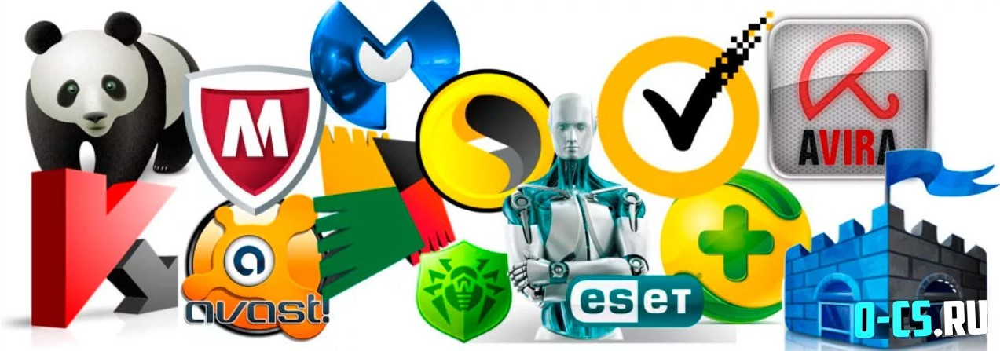
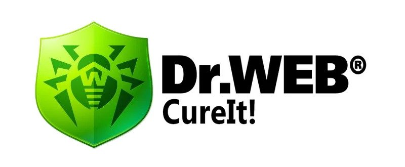
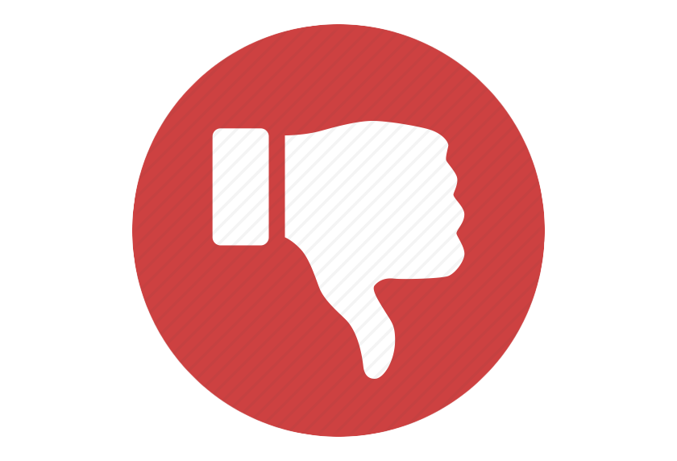
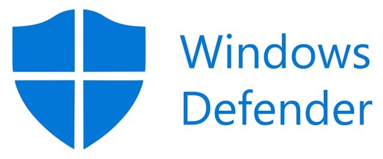
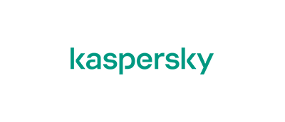
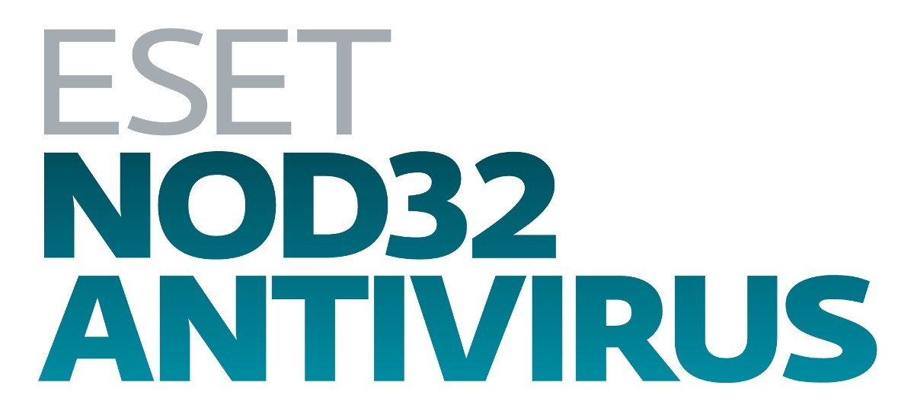
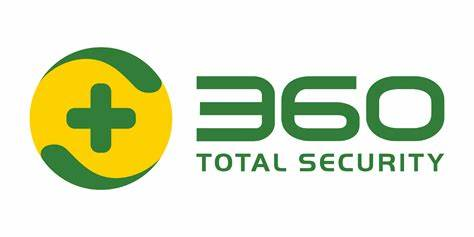

Топ лучших антивирусов

Интернет-пространство кишит вирусами. Часть из них может «убить» систему всего за секунду, другие блокируют доступ к важным данным и дают злоумышленнику повод для шантажа и вымогательства, а какие-то созданы ради злой шутки и пугают пользователей резким звуком в самый неожиданный момент. Объединяет их одно: никто бы не хотел приютить их на своем персональном компьютере.
Существуют и относительно безвредные вирусы. До конфиденциальности жертвы им нет дела – эти виды либо просто засоряют и тормозят систему, либо тайно используют ресурсы компьютера и добывают криптовалюту для настоящего владельца. Это так называемые «вирусы-майнеры», которые появились в последнее время с ростом цены и популярности биткоина. Им тоже мало кто рад, ведь они ускоряют износ отдельных компонентов, ухудшают производительность и занимают место на накопителе.
На этой странице Вы можете найти список антивирусов, которые помогут защитить Ваш компьютер. Здесь представлены как бесплатные, так и платные антивирусные программы.
Топ бесплатных антивирусов:
Dr.Web CureIt
Наш рейтинг бесплатных антивирусов открывает программа, которую часто называют «таблеткой». Это объясняется тем, что она не мониторит состояние операционной системы, а запускается пользователем для быстрого и глубокого анализа. Сразу обнаруживает и нейтрализует разные виды вирусных угроз, может сканировать все виды жестких дисков, а также внешние накопители, в том числе мобильные гаджеты при подключении к компьютеру. Имеется удобная командная строка, хорошо реализована система отчетности.

- проверка BIOS
- легкость использования
- эффективное обнаружение эксплойтов (это программы или наборы команд, которые ищут уязвимости в системе для последующей атаки)
- мониторинг загрузочных секторов и автозапуска

- процесс сканирования занимает много времени
- нет автообновления
Windows Defender
Топ бесплатных антивирусов для ПК продолжает штатный защитник, который производители устанавливают во все современные версии Windows 10. Работает в фоновом режиме, не перегружая системы и своевременно оповещая пользователя об обнаружении вирусов, которые можно сразу удалить, заблокировать или отправить в карантин. Несмотря на то что это бесплатная программа, она неплохо защищает компьютер, находя вирусы и трояны всех известных видов. Но нужно учитывать, что программа направлена на удаление вредоносных программ, а не на профилактику их попадания в систему, что может доставлять некоторые неудобства.

- автоматическое обновление
- проверка сторонних накопителей
- эффективное обнаружение угроз
- работает только на Windows 10 и Windows 11
360 Total Security
Бесплатный защитник, который анализирует файлы, эффективно нейтрализует угрозы, надежно защищает системную базу: постоянно мониторит операционную систему и браузеры на наличие угроз и блокирует перехват паролей. Главная особенность — функция «Песочница», которая позволяет безопасно запускать и тестировать сомнительные и потенциально опасные приложения и сайты, не беспокоясь о безопасности компьютера.
- удобный русскоязычный интерфейс
- создание точек восстановления системы
- удаление остаточных файлов после деинсталляции приложений
- долго подключается к серверам для обновления
Топ платных антивирусов:
Kaspersky
Подходит для компьютеров под управлением разных операционных систем, а также для мобильных устройств. Есть бесплатная версия, в которой можно проверять компьютер на наличие вирусов и получать уведомления при скачивании подозрительных файлов. В платной есть несколько тарифов с разным уровнем безопасности. Начальная версия — Anti-Virus с базовой защитой компьютера. Следующий уровень — Internet Security — имеет расширенные функции, в том числе веб-защиту, которая позволяет проводить безопасные платежи. Total Security — максимальная защита, куда дополнительно включены GPS-трекер, защита файлов и менеджер паролей.

- высокий уровень защиты
- возможность выбрать тарифный пакет
- функция родительского контроля в качестве бонуса к версии Total Security
- требует высокой производительности компьютера
Eset
Сравнение платных антивирусов продолжает эффективная программа ESET с двумя домашними тарифами для ПК. «ESET NOD32 Антивирус» предназначен для одного устройства, эффективно защищает от вирусов и интернет-мошенников. ESET NOD32 Internet Security можно использовать на 3−4 компьютерах, помимо базовой защиты, он шифрует онлайн-платежи и защищает от внешнего подключения веб-камеру и Wi-Fi, также есть родительский контроль.

- высокий уровень защиты
- родительский контроль
- гарантия антивирусной защиты — если компьютер поймает вирус, компания вернет деньги
360 Total Security
Завершает наш обзор антивирусных программ защитник без пробного периода в платной версии. Вы наверняка обратили внимание, что в статье он встречается уже второй раз. Дело в том, что free-antivirus — это отдельная полноценная программа, которая на бесплатной основе эффективно защищает компьютер. В платной версии дополнительно имеется брандмауэр — фильтр, анализирующий информацию, которая скачивается из интернета. Еще есть уничтожитель данных, который удаляет файлы без возможности восстановления на жестком диске.

- высокий уровень защиты
- небольшая нагрузка на систему
- наличие уничтожителя данных
- отсутствие пробного периода